Hull Anomaly Annotation Manual
This page teaches annotation judgment: what to label, which class it is, and where the boundaries go. Read the quick start, then the common mistakes. Keep the colour reference open while you work (button, bottom right).
Quick start — the 10 rules that matter most#
- Corroded surface = Rust. Run-off from it = Dirt. If the surface itself is corroded, it is Rust. If it is discolouration that ran down from corrosion, it is Dirt 1 (heavy) or Dirt 2 (light). Manual p11 · FP-1
- Sweep for rust before you finish — then check every rust mask really is corrosion. Both directions cost rework. FP-2
- Blackish or metallic exposure = Steel. Grey or white = AC. Both definitions include "white", so white alone decides nothing. Manual p12–13 · FP-3
- Peeled, but neither AC nor steel = AF deterioration. Manual p14
- Follow the anomaly's actual edge. No blobs, no bounding rectangles. FP-4
- Fill each class to its own extent. Do not let one mask swallow its neighbours. FP-5
- Large gap → separate regions. Do not enclose them as one blob. Ruling JP-3
- Classes may overlap — overlay them. Ruling JP-9
- Water drips, faint whitening, faded colour and normal AF wear are NOT dirt. Manual p17
- Misalignment tolerance is 2 px on the outside. Manual p5 · how to read this
Common mistakes to avoid#
Five habits show up again and again in our work. Each one below is a habit to change, not a comment on any single file. Learn to spot these five in your own work in progress.
FP-1 · We have been labelling rust as dirt#
Why this happens: rust and its run-off are the same colour, so colour cannot settle it. The manual's own wording is the tell — Rust is rust without rust leachate. The rust is the source; the streak is what leaked out of it.
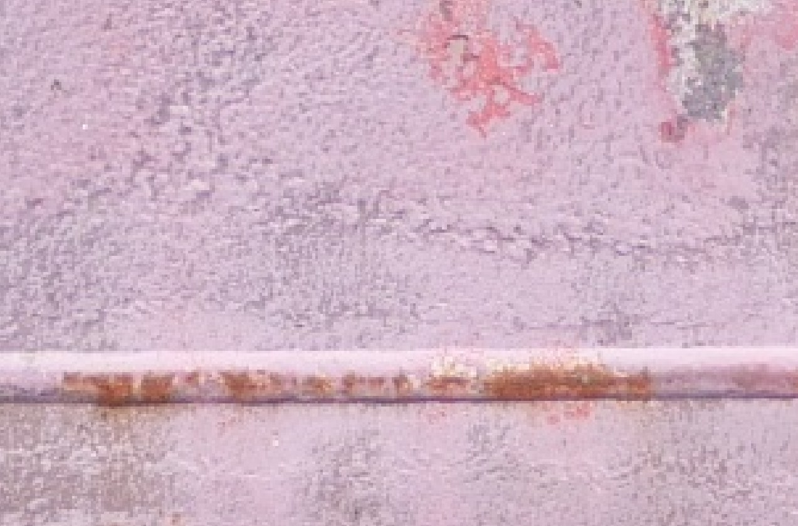
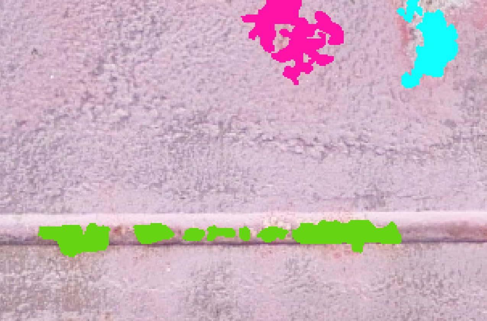
FP-2 · We have been missing rust — and calling things rust that are not#
Why this happens: small or faint rust reads as background and gets skipped; conversely, any orange-brown tone reads as "rust" and gets over-claimed. This is one habit with two directions, and the client flagged both on the same image.
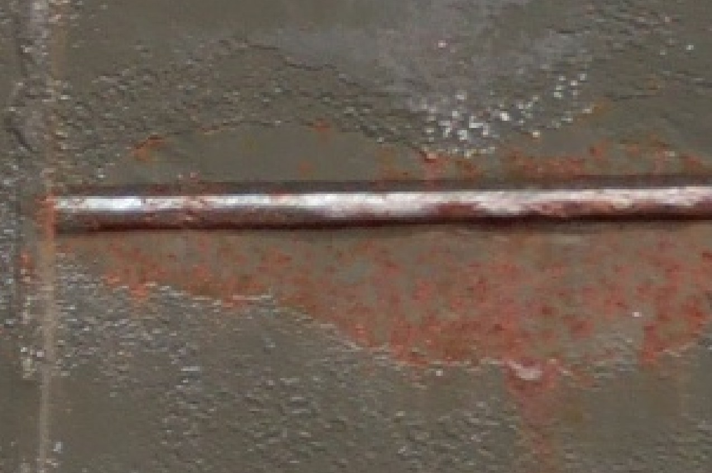
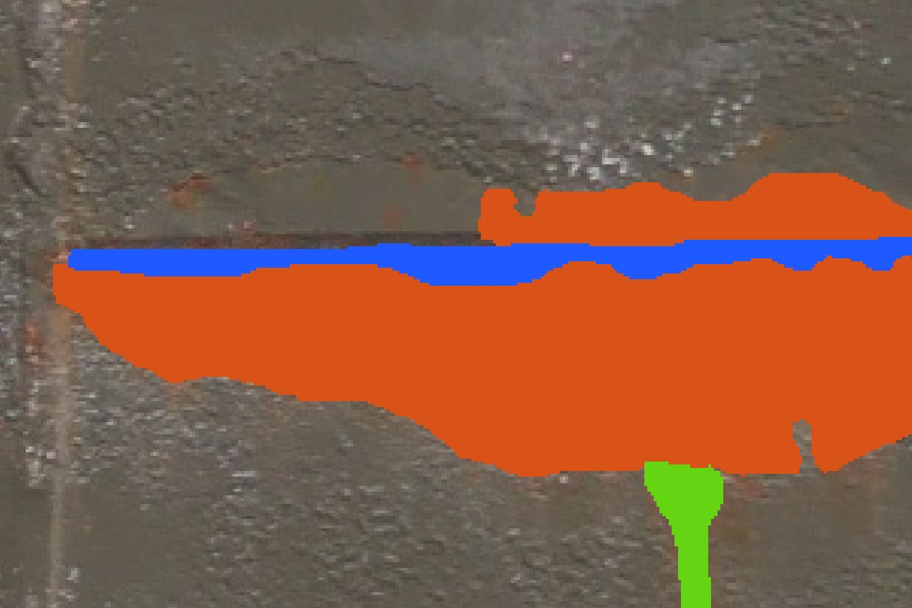
FP-3 · We have been defaulting to AC when an exposure looks pale#
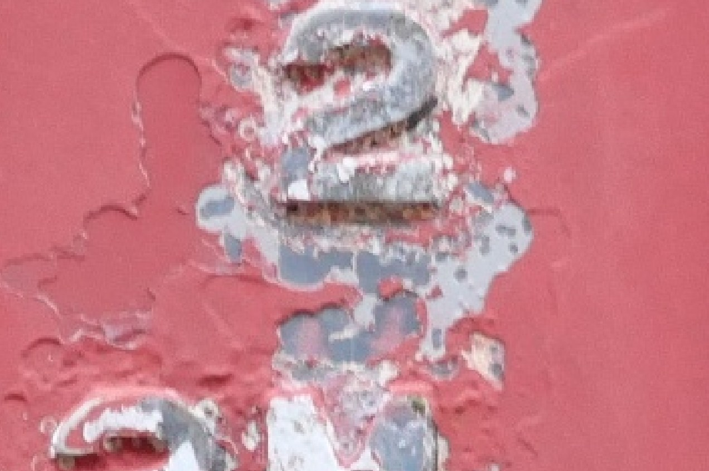
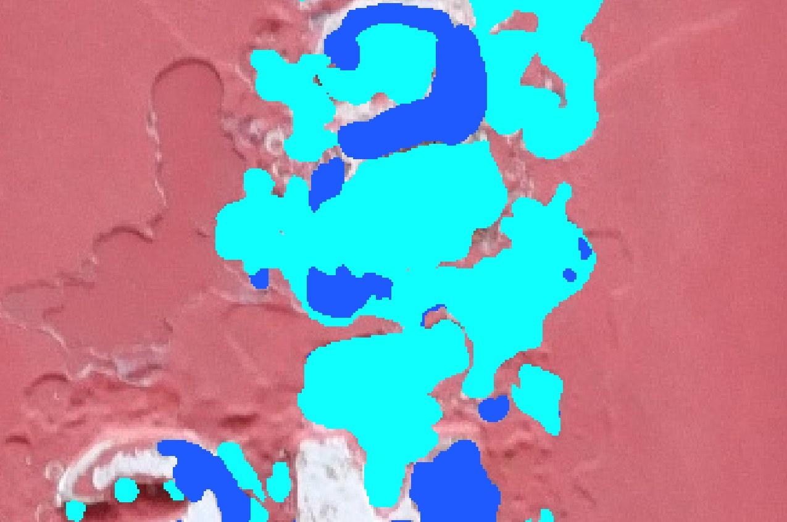
FP-4 · We have been drawing loose blobs around anomalies#
Why this happens: a smooth outline is much faster to draw and feels "close enough". At 2592 × 1944 with a 2 px tolerance, it is not. The three images below are the same region — the client supplied the granularity they expect.
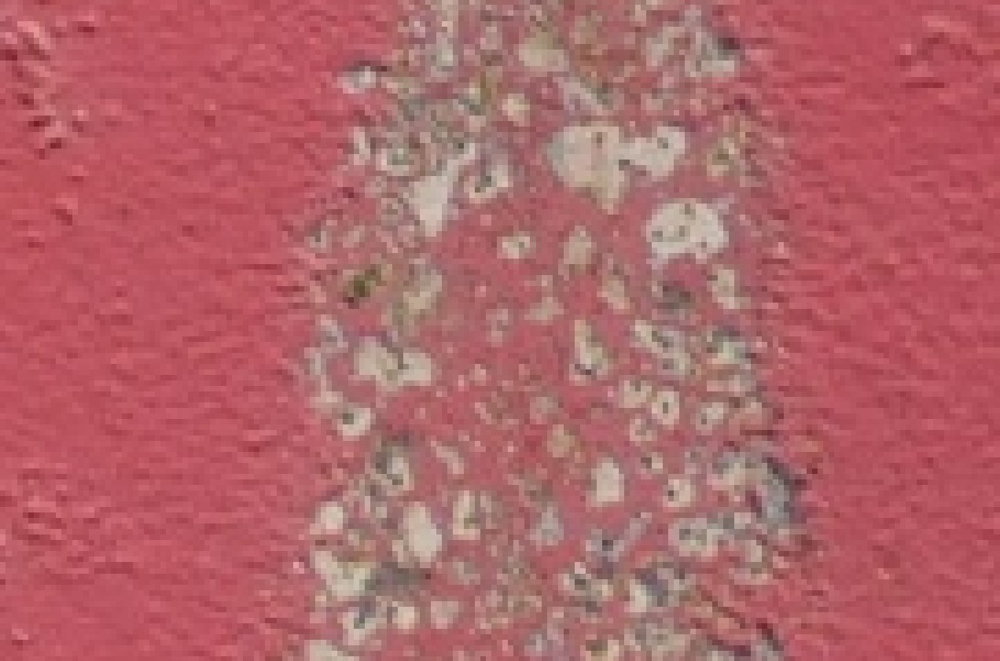
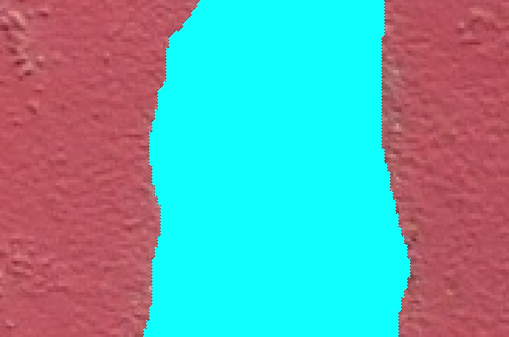
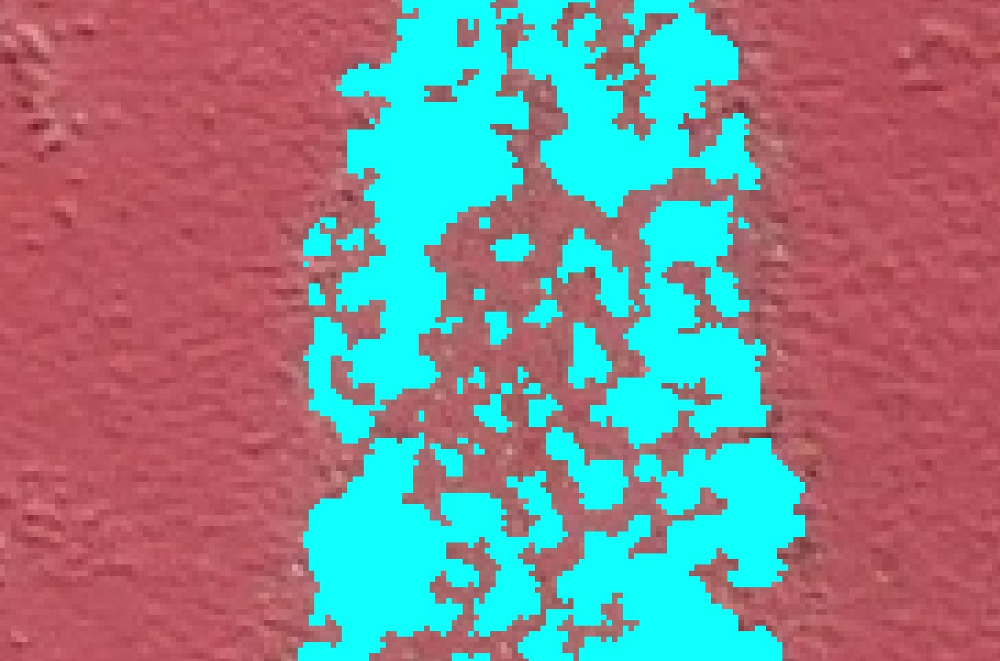
FP-5 · We have been letting one mask swallow the area#
Why this happens: where two classes touch, drawing one boundary is easier than drawing two. But the classes mean different things to the model, so a merged mask teaches it the wrong thing.
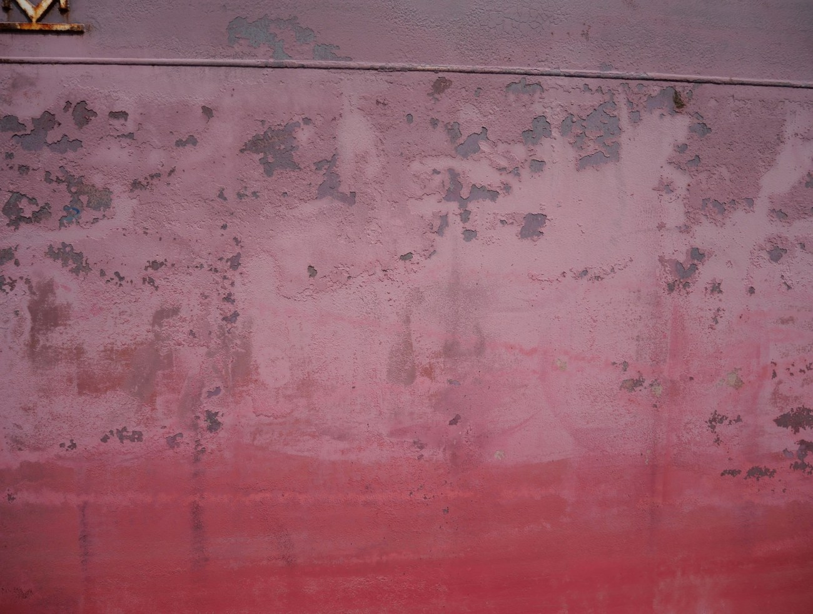
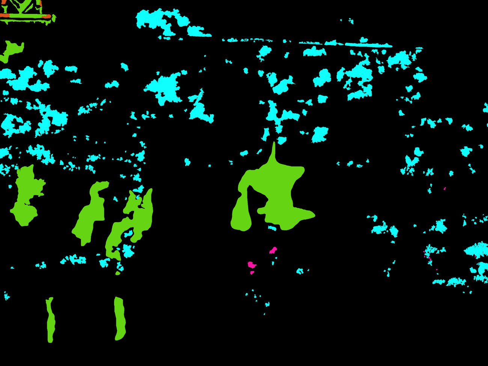
The 8 classes#
These RGB values are exact. They are the mask pixel values — do not approximate them.
| Class | RGB (R, G, B) | One-line test |
|---|---|---|
| Rust spots | (217, 83, 25) | The surface itself is corroded |
| Exposed Steel Plate Area | (30, 90, 255) | Bare plate — white or blackish/metallic |
| Exposed areas of AC paint | (15, 255, 255) | Under-paint showing — white or greyish |
| AF paint deterioration / peeling | (255, 19, 166) | Peeled, but not AC and not steel |
| Dirt 1 | (100, 212, 19) | Heavy: rubber marks, rust streaks, oil/paint drips |
| Dirt 2 | (255, 215, 0) | Light: faint rust stains, water scale |
| Residual marine organisms and deposits | (183, 70, 255) | White round spots, bright white areas |
| Sound areas | (0, 0, 0) | No abnormality — includes normal AF wear |
1 · Rust spots
rgb(217, 83, 25)Definition: areas of rust that do not contain rust leachate. Manual p11
Looks like: the metal surface itself has corroded — rough, orange-brown, often along seams, weld lines and edges.
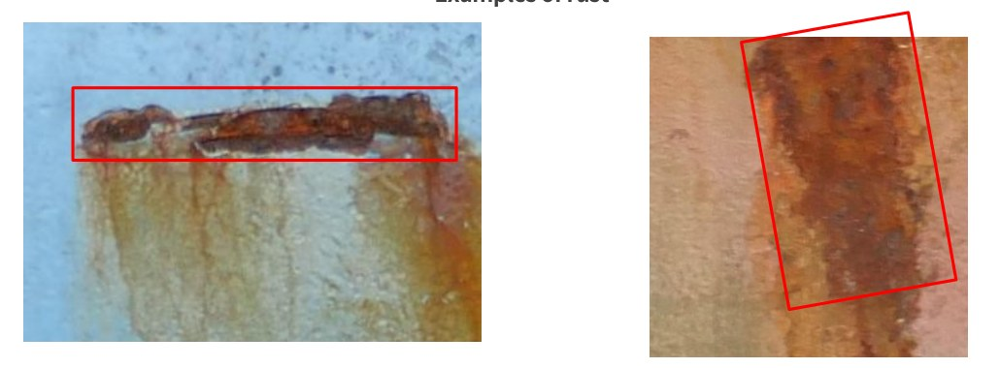
2 · Exposed Steel Plate Area
rgb(30, 90, 255)Definition: areas where the paint has come away revealing the steel plate — white or blackish areas. Manual p12
Looks like: bare plate. Often dark, grey-blue or metallic; may have rust in the recesses.
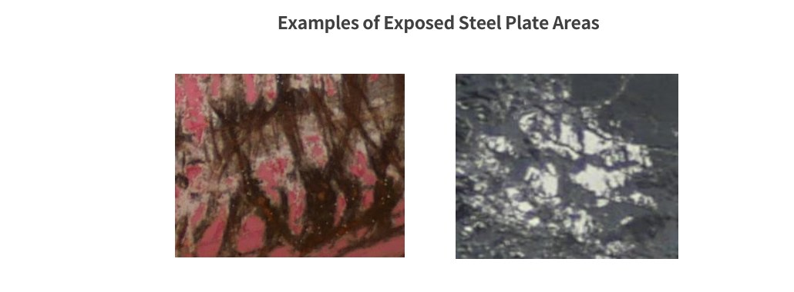
3 · Exposed areas of AC paint
rgb(15, 255, 255)Definition: areas where the paint has peeled away revealing white or greyish surfaces. Manual p13
Looks like: the anticorrosive layer under the topcoat — pale, flat grey or white, not metallic.
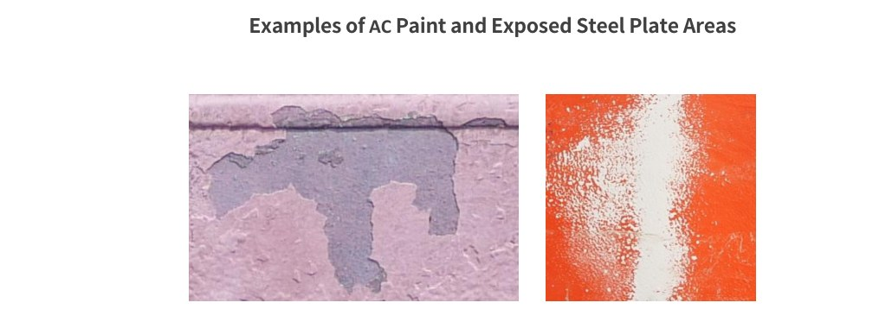
Client ruling JP-7 confirms a white-looking painted area in their example is AC.
4 · AF paint deterioration / peeling
rgb(255, 19, 166)Definition: areas where paint has peeled off but which do not match the AC or steel exposure classes. Manual p14
Looks like: the antifouling topcoat breaking up, flaking or "melting" away, without exposing grey under-paint or bare plate.
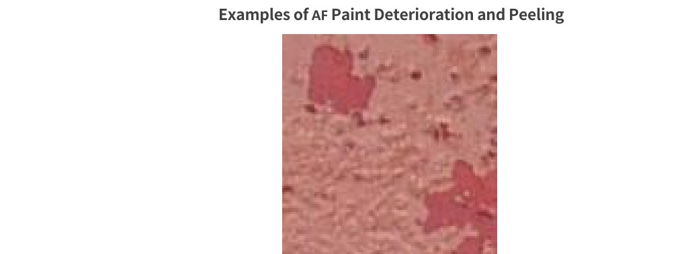
Rulings: JP-2 (a "melting" appearance is AF), EN-6 (a scattered pattern is AF).
5 · Dirt 1 — heavy
rgb(100, 212, 19)Definition: rubber marks, heavy rust streaks, oil stains, soap/wash residue. Manual p10, p15
- Dirt blackened by rubber marks.
- Rust stains (the run-off, not the corroded surface).
- Stains left by oil or other substances dripping.
- Paint drip / run marks — ruling EN-7
- Residue left after washing.
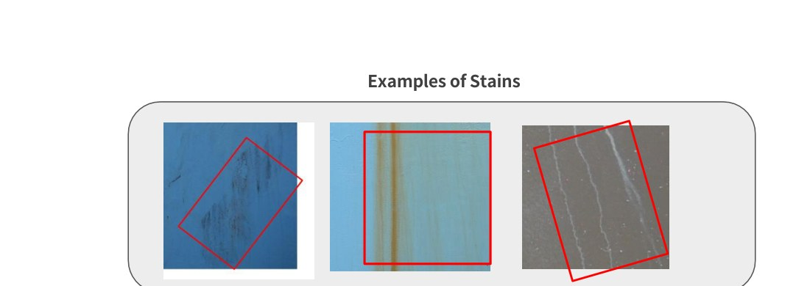
6 · Dirt 2 — light
rgb(255, 215, 0)Definition: light rust streaks, water stains / water scale. Manual p10, p16
- Stains with only a small amount of rust.
- Water scale / water spots. — rulings EN-4, EN-9
- A stain in a colour different from the hull's paint.
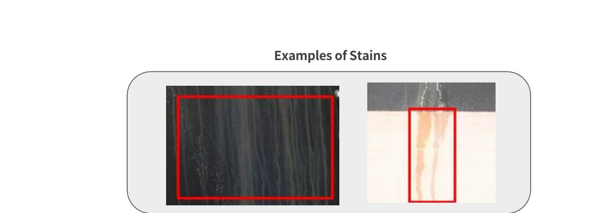
- Areas where water has dripped, or that merely look stained.
- Areas that have become faintly whitish overall.
- Areas where the colour has faded.
- Normal AF wear, where wear is widespread.
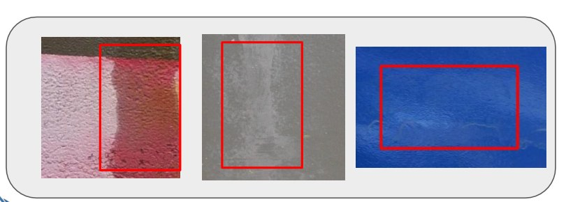
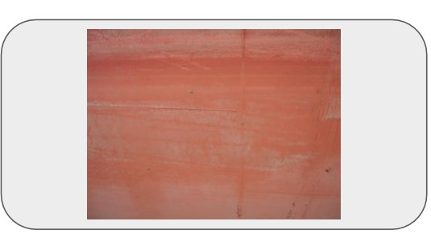
7 · Residual marine organisms and other deposits
rgb(183, 70, 255)Definition: white round spots; bright white areas. Manual p18
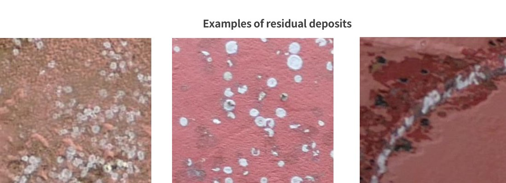
8 · Sound areas
rgb(0, 0, 0)Definition: areas with no abnormality, including normal wear of AF paint. Manual p10, p19
Areas that appear indented, as though the paint might have peeled, but where it has not actually peeled, are sound.
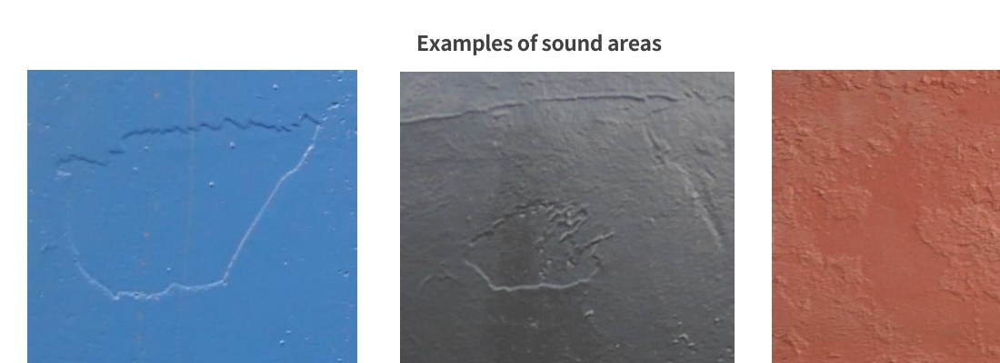
Ruling EN-1: a sound area sitting inside another class may be annotated as Sound on top of it — send the larger class to the back so the smaller shape stays in front.
Class decision flowchart#
Walk this when you are unsure. The two branches that caused the most rework are shaded.
Annotation technique#
Granularity — follow the shape#
Follow the actual edge of the anomaly. Do not draw a rectangle or a smooth blob that contains it. Where sound paint shows between parts of an anomaly, leave that paint unfilled.
Work at the resolution the job is delivered at — 2592 × 1944. That is what makes "fine enough" fine enough. Zoom in; an outline that looks tight at fit-to-screen is usually a slab at full size.
Compare the three-image sequence in FP-4 — it is the client's own statement of the granularity they expect.
The 2 px tolerance — "on the outside"#
Misalignment tolerance is 2 px on the outside. Manual p5 Your boundary may sit up to 2 px outside the true edge of the anomaly. It is a small allowance for edge precision — not licence to round off a shape.
Separate regions across a large gap#
Overlapping classes#
Scattered patterns#
Where an anomaly appears as many small scattered spots, follow the spots — do not sweep one mask across the whole field. The client classed a scattered pattern of this kind as AF deterioration, and asked that we cover as little sound area as possible. Ruling EN-6
Numerals and markings#
Cracks#
Annotate cracks at the level of detail the client's example shows. Ruling JP-1
What the finished work looks like
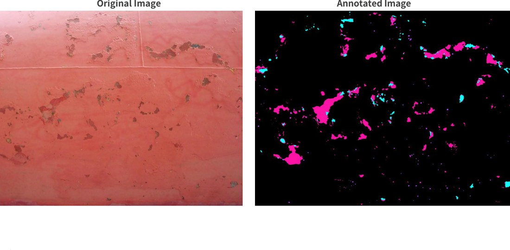
Worked examples#
How to read a busy surface where several classes appear at once.
Reading a surface for rust#
On a surface like this, rust appears as small, isolated corroded spots on otherwise sound paint. They are easy to walk past. Work across the image in a grid so no region goes unchecked.
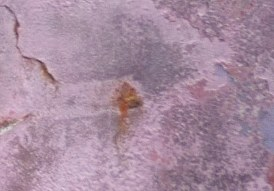
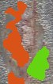
Crops from the client's review of P1000017, under their heading "Insufficient annotation of rust". The client marked these regions as a group and did not caption them individually; the captions above describe only what is visible in each crop.
Reading a surface for granularity#
Under the client's heading "Annotation is coarse overall", these crops show the scale at which detail is expected. The first two are the same region before and after annotation.
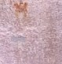
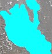
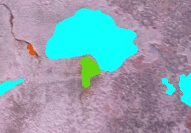
Reading an exposure: steel or AC?#
Return to the draft-mark image in FP-3. Walk it in this order:
- Paint has come off — so this is the Steel / AC / AF branch.
- Is bare metallic plate visible? Yes — grey-blue, metallic, with rust sitting in the recesses. → Exposed steel plate.
- Any grey/white under-paint at the margins, without metal? → Exposed AC.
- The corroded patches inside the exposure are Rust, and may overlap the exposure.
- The painted numeral itself still needs annotating. Ruling JP-6
Client rulings (Q&A)#
Answers the client has given to our questions. These override the manual where they differ. Grouped by situation — use the search box to find one fast.
Rust and dirt
This appears to be dripping. Which class should it be assigned to?
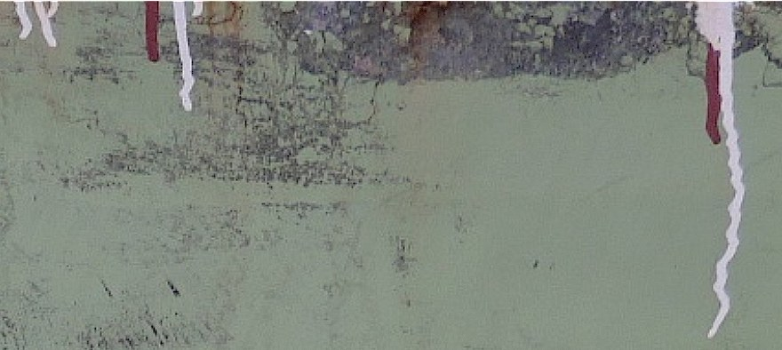
Is this dirt, or is it the steel material itself?
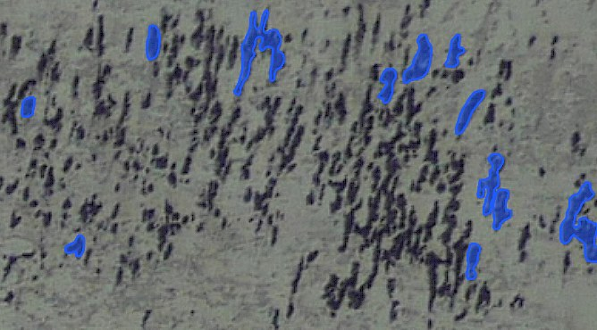
Peeling — AF, AC and steel
How should something that appears to be melting (peeling off) be handled?
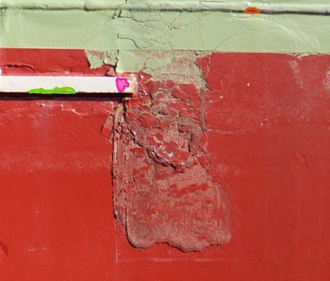
This appears to be an oil stain. How should it be handled?
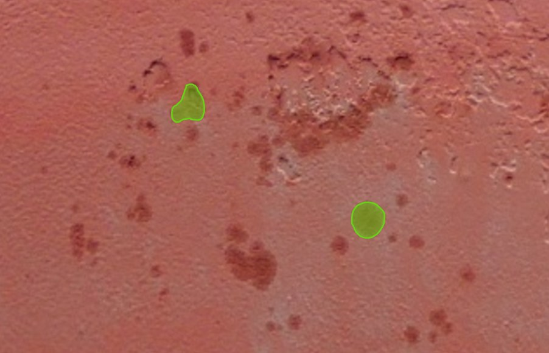
How should an image that is scattered like this be annotated?
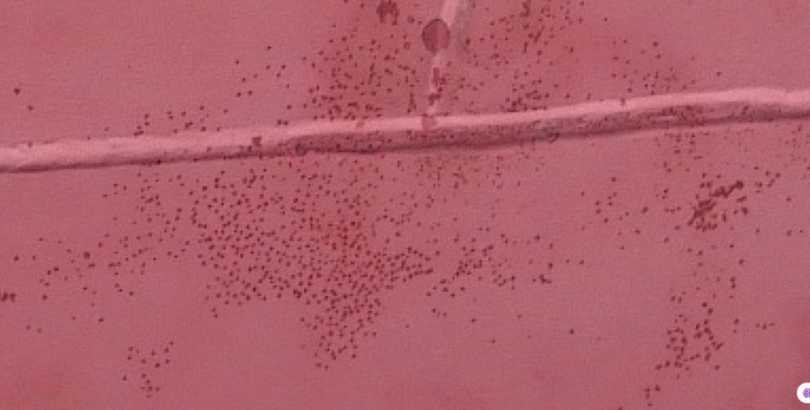
Several classes in one area
Is this an oil stain, or something that requires no action? Dirt 2?
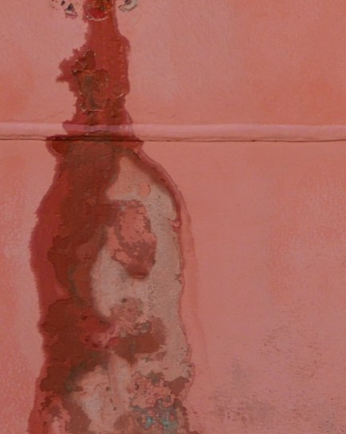
In this image, I could not determine what should be distinguished from what.
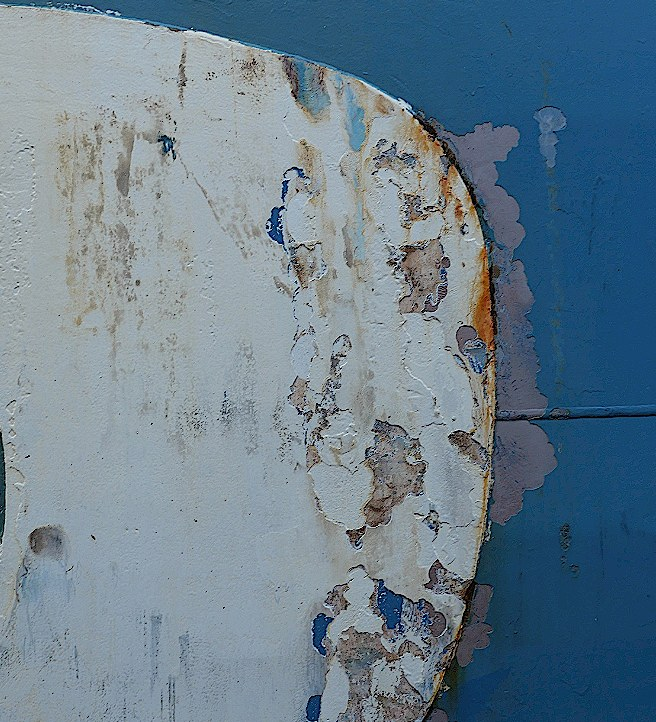
Is this an oil stain? In that case, what should the class be?
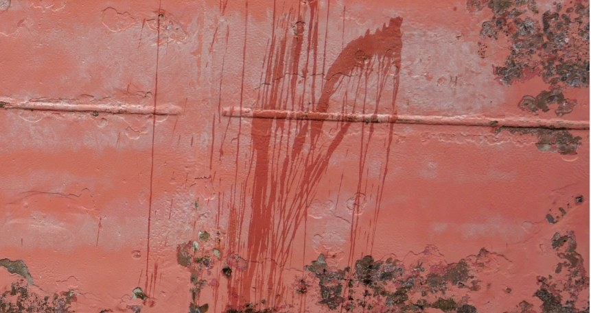
Where the boundaries go
Should this be enclosed all together as a single unit, or separately?
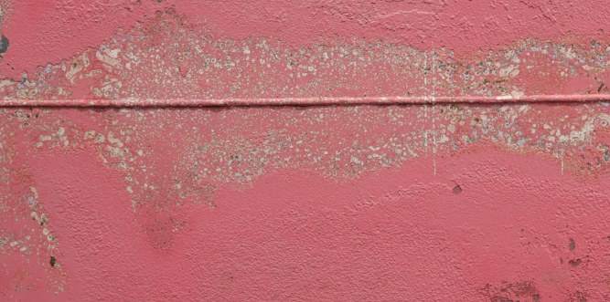
Is it acceptable to overlay one class on top of another?
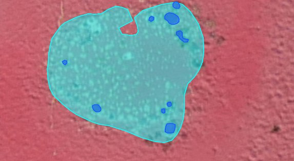
Is this an insect (or similar) inside? Does it need handling separately?
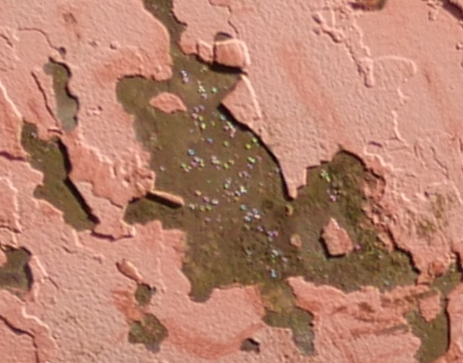
How should wall surfaces with cracks be handled?
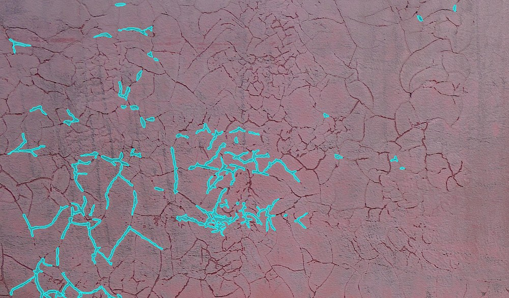
Does the numeral portion also require annotation?
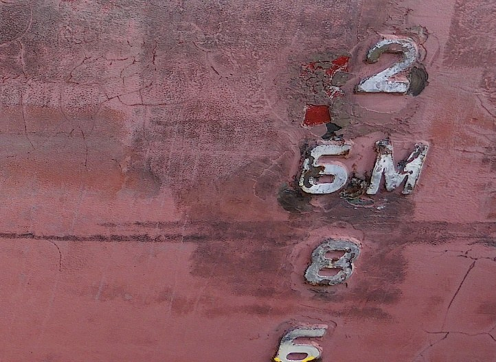
Can sound areas that sit inside another class be separated out, by annotating them with the Sound Area class?
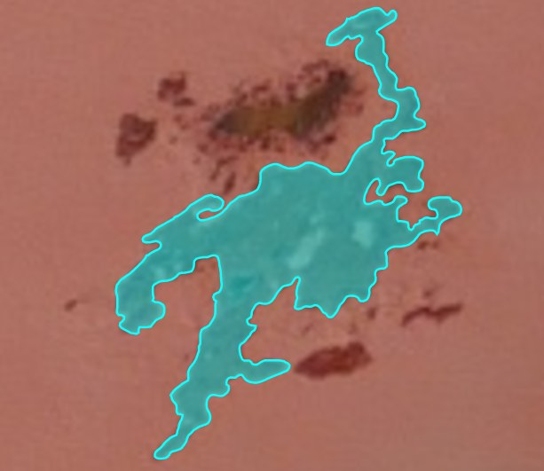
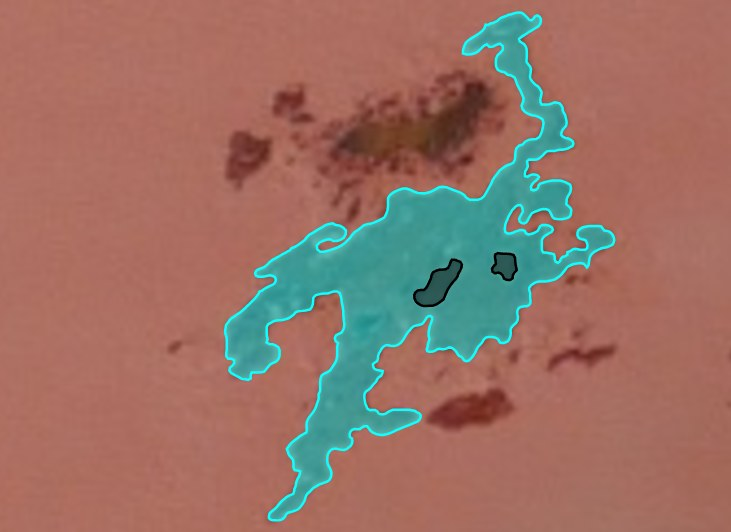
Glossary#
| AF paint | Antifouling paint — the outermost coat, which stops marine growth attaching to the hull. It is the coloured surface you usually see. |
|---|---|
| AC paint | Anticorrosive paint — the layer beneath the AF coat, protecting the steel. Usually pale grey or white where exposed. |
| Exposed steel plate | The hull's bare steel, visible because both paint layers have gone. Blackish or metallic in tone. |
| Rust leachate | Rust that has dissolved and run out of a corroded area, staining the surface below it. The leachate is Dirt; the corroded source is Rust. |
| Rust streak / rust stain | The mark left where leachate ran down the hull. Heavy → Dirt 1. Light → Dirt 2. |
| Water scale | Deposit left behind when water dries on the surface — pale, often patchy. Classed as Dirt 2. |
| Normal AF wear | Even, widespread thinning of the antifouling coat through ordinary use. Not dirt — it is Sound. |
| Mask | The output image, where each pixel carries the RGB value of its class. |
| Granularity | How closely your outline follows the real shape of an anomaly. See FP-4. |
| Tolerance | The permitted misalignment between your boundary and the true edge — 2 px on the outside. See the diagram. |
| Segmentation | Labelling every pixel of the image with a class, rather than drawing boxes. |
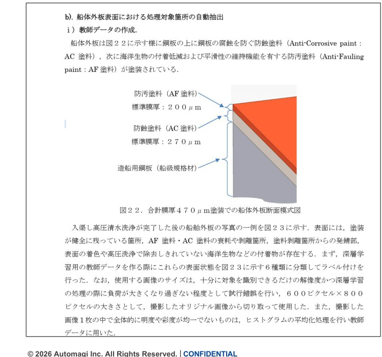